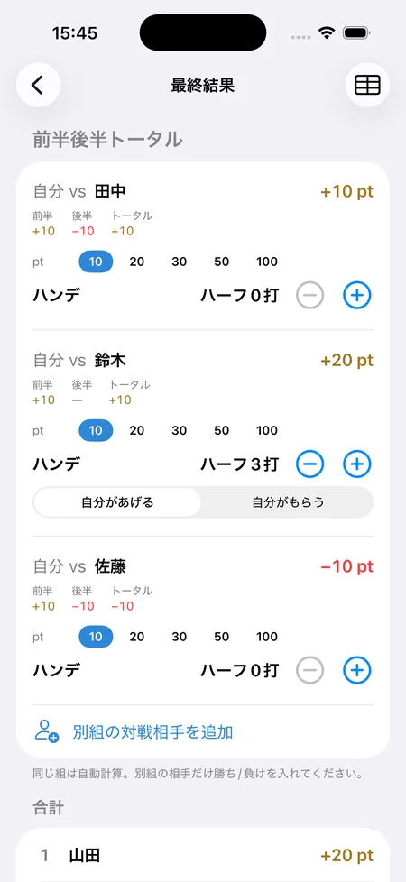

ゴルフ「ナッソー」のルールと計算方法
SQORE編集部 ｜ 2026年8月14日更新
ナッソーは、前半9ホール・後半9ホール・18ホールトータルの「3本」で、それぞれ独立して勝敗を付ける1対1の勝負です。前半に負けても後半とトータルで巻き返せるため、最後まで勝負が途切れないのが最大の特徴です。日本ではこのゲームを「ピンポンパン」と呼ぶ人が多いのですが、本来のピンポンパンは別のゲームです。その事情も後半で解説します。
基本ルール
- 対戦は1対1。前半・後半・トータルの3本それぞれに同じポイントを設定します（例: 各10ポイント）。
- 前半9ホールで勝ったほうが「前半」の1本を取る。
- 後半9ホールで勝ったほうが「後半」の1本を取る。
- 18ホール全体で勝ったほうが「トータル」の1本を取る。
- 3本の勝敗を合計して精算します（3本取れば3本ぶん、2勝1敗なら差し引き1本ぶん）。
トータルは前半・後半とは別の1本です。前半・後半を1つずつ分け合っても、トータルを取ったほうが勝ち越しになります。
勝敗の決め方は2通りある
ナッソーで最初に決めておくべきなのが、各9ホールの勝敗を何で判定するかです。ここが人によって認識が違い、ラウンド後に揉める一番の原因になります。
合計打数で決める（ストロークプレー方式）
その9ホールの合計打数が少ないほうが勝ち。日本の仲間内ではこちらが一般的で、スコアカードをそのまま使えるので分かりやすい方式です。
計算例（各10ポイント・合計打数方式）
Aさん: 前半42・後半45（トータル87）
Bさん: 前半45・後半43（トータル88）
前半 → Aの勝ち（42 < 45）
後半 → Bの勝ち（43 < 45）
トータル → Aの勝ち（87 < 88）
Aが2勝1敗なので、差し引きAが10ポイント獲得（Bは−10ポイント）。
ホールごとの勝敗で決める（マッチプレー方式）
1ホールずつ勝敗を付け、勝ったホール数が多いほうがその9ホールの勝ち。本来のナッソーはこちらの形式です。大叩きしたホールが1つあっても1ホール分の負けで済むため、実力差があっても勝負になりやすいのが特徴です。
計算例（マッチプレー方式・前半9ホール）
Aが5ホール勝ち／Bが3ホール勝ち／1ホール引き分け
→ Aの「2アップ」で前半はAの勝ち。
勝ちホール数の差だけを見るので、9ホールぶんの打数合計は関係ありません。
SQOREでの扱い
アプリのSQOREは合計打数方式で自動判定します。打数さえ入れれば前半・後半・トータルの勝敗が出るためです。
マッチプレー方式（ホールごとの勝ち負けで数える）には対応していません。同じ「ナッソー」でも判定が変わるので、マッチプレー方式でやる会は、勝敗をご自身で数えてください。
ポイントの決め方
3本それぞれに同じポイントを置くのが基本です（前半10・後半10・トータル10、など）。トータルだけ重くする形もありますが、3本を同額にしたほうが「後半だけでも取り返せる」というナッソー本来の面白さが出ます。
| 結果 | 取った本数 | 差し引き |
|---|---|---|
| 3本すべて勝ち | 3勝0敗 | +30ポイント |
| 前半・トータル勝ち | 2勝1敗 | +10ポイント |
| 前半のみ勝ち | 1勝2敗 | −10ポイント |
| 3本すべて負け | 0勝3敗 | −30ポイント |
1本あたり10ポイントの場合。引き分けた本は動きなしとするのが一般的です。
ハンデの付け方
実力差がある場合は、ハーフあたり数打のハンデをどちらかに与えます。「ハーフ3打」なら、もらう側はそのハーフの打数から3打引いた数字（ネット）で判定します。
トータルはハーフの2倍で判定するのが自然です。ハーフ3打なら、トータルは6打引いて比べます。ここを1倍のままにすると、トータルだけハンデが足りずに実力どおりの結果になってしまいます。
ハンデありの計算例（Bがハーフ3打もらう）
Aさん: 前半42・後半45（トータル87）
Bさん: 前半45・後半43（トータル88）
前半 → A42 vs B42（45−3）で引き分け
後半 → A45 vs B40（43−3）でBの勝ち
トータル → A87 vs B82（88−6）でBの勝ち
ハンデなしならAの2勝1敗でしたが、ハーフ3打でBの2勝0敗1分けに逆転します。
プレス（追加の勝負）
負けている側が、その時点から残りホールでの新しい勝負を追加で申し込むルールです。本場アメリカのナッソーでは一般的で、「2アップされたらプレスできる」といった条件を決めて使います。
ただしプレスを入れると勝負の本数が増えて集計が一気に複雑になるため、日本の仲間内では採用しないことも多いルールです。
3人以上でやる場合
- 総当たり戦 — ナッソーは1対1なので、3〜4人で回るときは全員と対戦を立てて総当たりにします。相手ごとにハンデとポイントを変えられるのがマッチ形式の良いところです。
- 別組との対戦 — コンペなどで、別の組で回っている相手と「今日のトータル勝負」をすることもあります。同じ組にいなくても成立するのがナッソーの強みです。
- ベストボール方式 — 2人1組のチーム戦にして、各ホールの良いほうのスコアをチームのスコアとする形もあります。
名前の由来
ナッソーは1900年、米国ニューヨークのナッソー・カントリークラブで考案されたと言われています。当時このクラブは非常に強く、他クラブとの対抗戦で圧勝続きだったため対戦を敬遠されるようになり、1日を3つの勝負に分けて「どこかでは勝てる」ようにしたのが始まりとされています。
バハマの首都ナッソーとは関係ありません。
なぜ「ピンポンパン」と呼ばれるのか
日本では、この前半・後半・トータルの3本勝負を「ピンポンパン」と呼ぶ人が多くいます。前半を「ピン」、後半を「ポン」、トータルを「パン」と数える言い方です。3本あるから3つの音、という覚え方で、実際の現場ではこちらの呼び名しか使わないという人も珍しくありません。
ところが本来の「ピンポンパン」は、これとは別のゲームです。
本来のピンポンパン
ホールごとに、次の3つを取った人がそれぞれ1点ずつ獲得します。18ホール終了時点で合計点が最も多い人の勝ちです。
ピン — 最初にグリーンにオンした人
ポン — 全員がオンした段階で、最もピンに近い人
パン — 最初にカップインした人
「最初にホールアウトした人がピン、2番目がポン、3番目がパン」と、上がった順番で数える流儀もあります。いずれにしてもホール単位で点を積み上げるゲームで、前半・後半・トータルの3本勝負とは別物です。
つまり「3つある」という一点だけが共通していて、中身はまったく違うゲームです。ナッソーの3本を「ピン・ポン・パン」と数えているうちに、ゲームそのものの呼び名として定着していったものと考えられます。
| ナッソー（＝ピンポンパンと呼ばれるもの） | 本来のピンポンパン | |
|---|---|---|
| 何を競うか | 前半・後半・トータルの3本の勝敗 | ホールごとの3つの達成 |
| 数える単位 | 9ホール・18ホールのまとまり | 1ホールずつ |
| 人数 | 1対1（総当たりも可） | 全員参加 |
| 必要な記録 | 打数だけ | オンの順番・ピンまでの近さ・カップインの順番 |
仲間内で「今日ピンポンパンやる？」と言われたら、どちらのつもりかを確認しておくと安全です。ほとんどの場合は前半・後半・トータルの3本勝負を指していますが、認識が食い違うと1ホール目から噛み合いません。
3本×人数ぶんの集計が地味に面倒
2人でやるだけなら暗算でも足りますが、4人で総当たりにすると対戦は6組、勝負は18本になります。ハンデが人によって違うとさらに込み入って、ラウンド後に電卓を出すことになりがちです。
アプリなら相手ごとの3本が自動で出る
ハンデ込みで、前半・後半・トータルを自動判定
iPhoneアプリのSQOREなら、対戦相手とポイント・ハンデを決めておくだけ。あとは普段どおり打数を入れれば、相手ごとに前半・後半・トータルの勝敗が出て、合計まで自動でまとまります。
画面は自分vs3人の総当たり。鈴木さんにはハーフ3打のハンデがあり、後半は引き分け（—）と判定されています。別の組で回っている相手との勝負も追加できます。

よくある質問
引き分けのときは？
その本は動きなしとするのが一般的です。3本すべて引き分けなら精算もゼロになります。
ピンポンパンとナッソーは同じ？
日常的にはほぼ同じ意味で使われていますが、厳密には違います。前半・後半・トータルの3本勝負を「ピン・ポン・パン」と数えることからナッソーをそう呼ぶ人が多い一方、本来のピンポンパンは、ホールごとに「最初にグリーンにオンした人」「最もピンに近い人」「最初にカップインした人」が1点ずつ取るゲームです。くわしくはなぜ「ピンポンパン」と呼ばれるのかをご覧ください。
本来のピンポンパンはどうやって点を数える？
ホールごとに、ピン（最初にグリーンオン）・ポン（全員オン時に最もピンに近い）・パン（最初にカップイン）で1点ずつです。18ホール終了時点の合計点が最も多い人が勝ちになります。上がった順番でピン・ポン・パンと数える流儀もあります。
合計打数とマッチプレー、どちらで決めるべき？
スコアカードの数字をそのまま使える合計打数方式のほうが手軽です。実力差が大きい相手とやるなら、大叩きが響きにくいマッチプレー方式のほうが接戦になります。スタート前にどちらか決めておいてください。
9ホールだけのラウンドでもできる？
できますが、その場合は「前半」と「トータル」が同じ勝負になってしまうので、3本ではなく1本の勝負として扱います。
18ホール終わってから勝敗を計算してもいい？
合計打数方式なら問題ありません。マッチプレー方式の場合はホールごとの勝敗が必要なので、スコアカードから1ホールずつ数え直すことになります。
3本勝負の集計はアプリにおまかせ
SQOREはナッソー・ラスベガス・オリンピックなど定番ゲームのポイントを自動計算する無料アプリです。
ゲームをしない日はスコアアプリとしてそのまま使えます。いま打つホールの自分の平均スコアやOB率も出ます。
Download on theApp Store